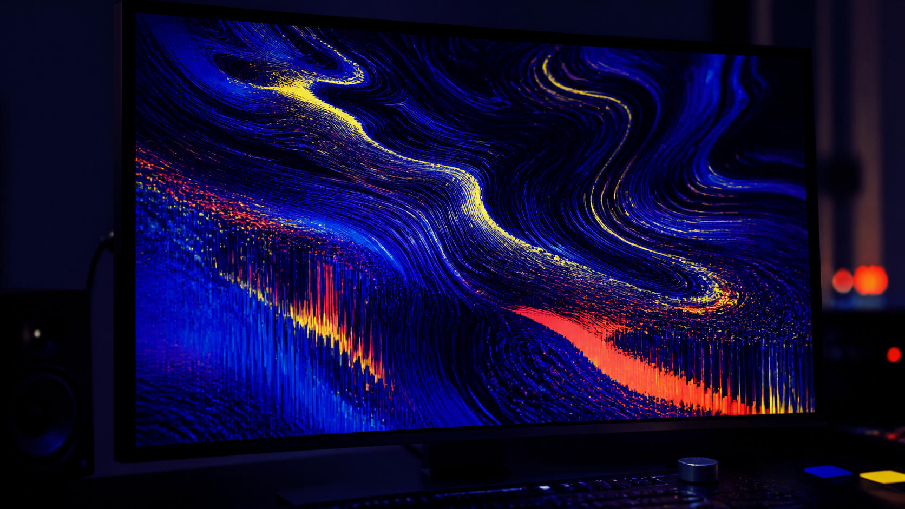

Shader Studio
Description
A browser studio for turning images and video into animated visual treatments while keeping source media local.
CategoryCreative tools

Designed around immediate visual feedback and local media handling, so experimentation stays fast without turning source assets into a network dependency.